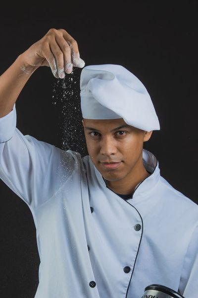

Our Story

Passo in Italia — meaning "a step in Italy" — was founded by a South African pastry chef who travelled to Italy to train in traditional Italian baking, working alongside master patissiers to learn techniques passed down through generations. After years of learning the craft abroad, she returned home with one goal: to bring that same authenticity to Cape Town.
Today, Passo in Italia blends Italian technique with classical French patisserie, creating cornetti, cannoli, tiramisu, croissants, and tarts made fresh every morning in the heart of Sea Point.
Our Mission
To bring authentic, handcrafted Italian-French patisserie to Cape Town, made fresh daily using traditional technique and quality, locally sourced ingredients.
Our Vision
To become Sea Point's go-to destination for artisan pastry, known equally among locals and visitors for quality and warmth.